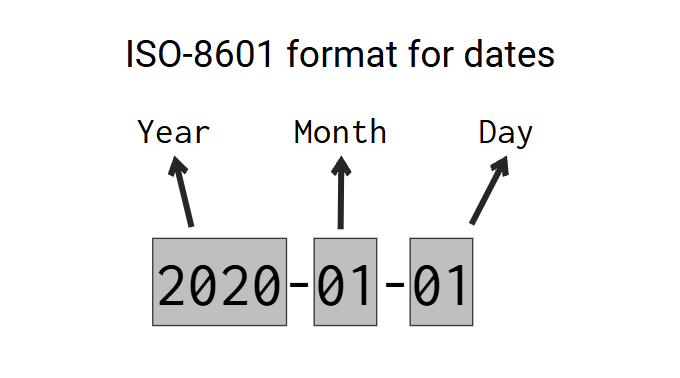

from pyspark.sql import Row
data = [
Row(date_registered = "2021-01-01"),
Row(date_registered = "2021-01-01"),
Row(date_registered = "2021-01-02"),
Row(date_registered = "2021-01-03")
]
df = spark.createDataFrame(data)11 Tools for dates and datetimes manipulation
Units of measurement that represent time are very commom types of data in our modern world. Nowadays, dates and datetimes (or timestamps) are the most commom units used to represent a specific point in time. In this chapter, you will learn how to import, manipulate and use this kind of data with pyspark.
In Spark, dates and datetimes are represented by the DateType and TimestampType data types, respectively, which are available in the pyspark.sql.types module. Spark also offers two other data types to represent “intervals of time”, which are YearMonthIntervalType and DayTimeIntervalType. However, you usually don’t use these types directly to create new objects. In other words, they are intermediate types. They are a passage, or a path you use to get to another data type.
11.1 Creating date values
Dates are normally interpreted in pyspark using the DateType data type. There are three commom ways to create date objects, which are:
- from strings (like
"3 of June of 2023", or maybe,"2023-02-05"). - by extracting the date component from datetime values (i.e. values of type
TimestampType). - by combining day, month and year components to build a date object.
11.1.1 From strings
When you have a StringType column in your DataFrame that contains dates that are currently being stored inside strings, and you want to convert this column into a DateType column, you basically have two choices: 1) use the automatic column conversion with cast() or astype(); 2) use the to_date() Spark SQL function to convert the strings using a specific date format.
When you use the cast() (or astype()) column method that we introduced at Section 5.7.3, Spark will perform a quick and automatic conversion to DateType by casting the strings you have into the DateType. But when you use this method, Spark will always assume that the dates you have are in the ISO-8601 format, which is the international standard for dates. This format is presented at Figure 11.1:

Basically, the ISO-8601 standard specifies that dates are represented in the format “YYYY-MM-DD” (or “Year-Month-Date”), like 2023-09-19, 1926-05-21, or 2005-11-01. This is also the format that dates are usually formatted in United States of America. So, if the dates you have (which are currently stored inside strings) are formatted like the ISO-8601 standard, then, you can safely and easily convert them into the DateType by using the cast() or astype() column methods.
However, if these dates are formatted in a different way, then, the cast() method will very likely produce null values as a result, because it cannot parse dates that are outside the ISO-8601 format. If that is your case, then you should use the to_date() function, which allows you to specify the exact format of your dates.
There are many examples of date formats which are outside of the ISO-8601 format. Like:
- In Brazil and Spain, dates are formatted as “Day/Month/Year”. Example: “23/04/2022” for April 23, 2022.
- In Japan, dates are formatted as “year month day (weekday)”, with the Japanese characters meaning “year”, “month” and “day” inserted after the numerals. Example: 2008年12月31日 (水) for “Wednesday 31 December 2008”.
- Many websites display dates using the full name of the month, like “November 18, 2023”. This is an important fact considering that web-scrapping is a real and important area of data analysis these days.
I will describe at Section 11.3 how you can use the to_date() function to convert dates that are outside of the ISO format to DateType values. But for now, for simplicity sake, I will consider only strings that contains date in the ISO format.
As a first example, lets consider the DataFrame df below:
If we look at the DataFrame schema of df, we can see that the date_registered column is currently being interpreted as a column of type StringType:
df.printSchema()root
|-- date_registered: string (nullable = true)
Since the dates from the date_registered column are formatted like the ISO-8601 standard, we can safely use cast() to get a column of type DateType. And if we look again at the DataFrame schema after the transformation, we can certify that the date_registered column is in fact now, a column of type DateType.
from pyspark.sql.functions import col
df = df.withColumn(
'date_registered',
col('date_registered').cast('date')
)
df.show()[Stage 0:> (0 + 1) / 1] +---------------+
|date_registered|
+---------------+
| 2021-01-01|
| 2021-01-01|
| 2021-01-02|
| 2021-01-03|
+---------------+
df.printSchema()root
|-- date_registered: date (nullable = true)
11.1.2 From datetime values
A datetime value is a value that contains both a date component and a time component. But you can obviously extract just the date component from a datetime value. Let’s use the following DataFrame as example:
from pyspark.sql import Row
from datetime import datetime
data = [
{'as_datetime': datetime(2021, 6, 12, 10, 0, 0)},
{'as_datetime': datetime(2021, 6, 12, 18, 0, 0)},
{'as_datetime': datetime(2021, 6, 13, 7, 0, 0)},
{'as_datetime': datetime(2021, 6, 14, 19, 30, 0)}
]
df = spark.createDataFrame(data)
df.printSchema()root
|-- as_datetime: timestamp (nullable = true)
You can extract the date component from the as_datetime column by directly casting the column into the DateType type. Like you would normally do with a string column.
df.withColumn('date_component', col('as_datetime').cast('date'))\
.show()+-------------------+--------------+
| as_datetime|date_component|
+-------------------+--------------+
|2021-06-12 10:00:00| 2021-06-12|
|2021-06-12 18:00:00| 2021-06-12|
|2021-06-13 07:00:00| 2021-06-13|
|2021-06-14 19:30:00| 2021-06-14|
+-------------------+--------------+
11.1.3 From individual components
If you have 3 columns in your DataFrame, one for each component of a date value (day, month, year), you can group these components together to form date values. In pyspark you do this by using the make_date() function.
To use this function, you just list the columns of each component in the following order: year, month and day. Like in this example:
from pyspark.sql.functions import make_date
df3 = spark.createDataFrame([
Row(day=14,month=2,year=2021),
Row(day=30,month=4,year=2021),
Row(day=2,month=5,year=2021),
Row(day=6,month=5,year=2021)
])
df3\
.withColumn(
'as_date',
make_date(
col('year'),
col('month'),
col('day')
)
)\
.show()+---+-----+----+----------+
|day|month|year| as_date|
+---+-----+----+----------+
| 14| 2|2021|2021-02-14|
| 30| 4|2021|2021-04-30|
| 2| 5|2021|2021-05-02|
| 6| 5|2021|2021-05-06|
+---+-----+----+----------+
11.2 Creating datetime values
Datetime values are values that contains both a date and a time components. These datetime values might also come with a time zone component, although this component is not mandatory.
Different programming languages and frameworks might have different names for these kind of values. Because of that, you might know datetime values by a different name. For example, “timestamps” is also a very popular name for this kind of values. Anyway, in pyspark, datetime (or timestamp) values are interpreted by the TimestampType data type.
There are three commom ways to create datetime objects, which are:
- from strings (like
"2023-02-05 12:30:00"). - from integer values (i.e.
IntegerTypeandLongType). - by combining the individual components of a datetime value (day, month, year, hour, minute, second, etc.) to form a complete datetime value.
11.2.1 From strings
Again, if your datetime values are being currently stored inside strings, and, you want to convert them to datetime values, you can use the automatic conversion of Spark with the cast() column method. However, as we stated at Section 11.1, when you use this path, Spark will always assume that your datetime values follow the ISO-8601 format.
The ISO-8601 standard states that datetime values should always follow the format “YYYY-MM-DD HH:MM:SS Z” (or “Year-Month-Day Hour:Minute:Second TimeZone”). You can see at Figure 11.2, that are components that are mandatory (meaning that they always appear in a datetime value), and components that are optional (meaning that they might appear or might not in a datetime value).
The time zone component is always optional, and because of that, they usually are not present in the datetime values you have. There are some variations and extra characters that might appear at some points, for example, the character ‘T’ might appear to clearly separate the date from the time component, and the character ‘Z’ to separate the time zone from the time component. Also, the time component might have a microseconds section to identify a more precise point in time.
But despite all these variations, datetime values that are ISO-8601 compatible are basically always following this same pattern (or this same order of components) of “Year-Month-Day Hour:Minute:Second TimeZone”. Examples of values that follows this standard are “2014-10-18T16:30:00Z”, “2019-05-09 08:20:05.324” and “2020-01-01 12:30:00 -03”.

This means that if your datetime values are not in this format, if they do not follow the ISO-8601 standard, then, you should not use the cast() method. If that is your case, you should use datetime patterns with the to_timestamp() function. We describe these assets in more depth at Section 11.3.
For now, let’s focus on examples that use the ISO-8601 format. As an example, lets use the df2 DataFrame below:
data = [
Row(datetime_as_string = "2021-02-23T04:41:57Z"),
Row(datetime_as_string = "2021-05-18T12:30:05Z"),
Row(datetime_as_string = "2021-11-13T16:30:00Z"),
Row(datetime_as_string = "2021-08-09T00:30:16Z")
]
df2 = spark.createDataFrame(data)
df2.printSchema()root
|-- datetime_as_string: string (nullable = true)
You can see above, that the datetime_as_string column is currently being interpreted as a column of strings. But since the values are in ISO-8601 format, I can use the cast method to directly convert them into timestamp values.
df2 = df2\
.withColumn(
'datetime_values',
col('datetime_as_string').cast('timestamp')
)
df2.printSchema()root
|-- datetime_as_string: string (nullable = true)
|-- datetime_values: timestamp (nullable = true)
df2.show()+--------------------+-------------------+
| datetime_as_string| datetime_values|
+--------------------+-------------------+
|2021-02-23T04:41:57Z|2021-02-23 01:41:57|
|2021-05-18T12:30:05Z|2021-05-18 09:30:05|
|2021-11-13T16:30:00Z|2021-11-13 13:30:00|
|2021-08-09T00:30:16Z|2021-08-08 21:30:16|
+--------------------+-------------------+
11.2.2 From integers
You can also convert integers directly to datetime values by using the cast() method. In this situation, the integers are interpreted as being the number of seconds since the UNIX time epoch, which is mid-night of 1 January of 1970 ("1970-01-01 00:00:00"). In other words, the integer 60 will be converted the point in time that is 60 seconds after "1970-01-01 00:00:00", which would be "1970-01-01 00:01:00".
In the example below, the number 1,000,421,325 is converted into 19:48:45 of 13 September of 2001. Because this exact point in time is 1.000421 billion of seconds ahead of the UNIX epoch.
df3 = spark.createDataFrame([
Row(datetime_as_integer = 1000421325),
Row(datetime_as_integer = 1000423628),
Row(datetime_as_integer = 500),
Row(datetime_as_integer = 1000493412)
])
df3 = df3\
.withColumn(
'datetime_values',
col('datetime_as_integer').cast('timestamp')
)
df3.show()+-------------------+-------------------+
|datetime_as_integer| datetime_values|
+-------------------+-------------------+
| 1000421325|2001-09-13 19:48:45|
| 1000423628|2001-09-13 20:27:08|
| 500|1969-12-31 21:08:20|
| 1000493412|2001-09-14 15:50:12|
+-------------------+-------------------+
However, you probably notice in the example above, that something is odd. Because the number 500 was converted into "1969-12-31 21:08:20", which is in theory, behind the UNIX epoch, which is 1 January of 1970. Why did that happen? The answer is that your time zone is always taken into account during a conversion from integers to datetime values!
In the example above, Spark is running on an operating system that is using the America/Sao_Paulo time zone (which is 3 hours late from international time zone - UTC-3) as the “default time zone” of the system. As a result, integers will be interpreted as being the number of seconds since the UNIX time epoch minus 3 hours, which is "1969-12-31 21:00:00". So, in this context, the integer 60 would be converted into "1969-12-31 21:01:00" (instead of the usual "1970-01-01 00:01:00" that you would expect).
That is why the number 500 was converted into "1969-12-31 21:08:20". Because it is 500 seconds ahead of "1969-12-31 21:00:00", which is 3 hours behind the UNIX time epoch.
But what if you wanted to convert your integers into a UTC-0 time zone? Well, you could just set the time zone of your Spark Session to the international time zone before you do the conversion, with the command below:
spark.conf.set("spark.sql.session.timeZone", "UTC")But you could also do the conversion anyway and adjust the values later. That is, you just perform the conversion with the cast() method, even if the result would be in your current time zone. After that, you add the amount of time necessary to transpose your datetime values to the international time zone (UTC-0).
So in the above example, since I was using the Brasília time zone (UTC-3) during the above conversion, I just need to add 3 hours to all datetime values to get their equivalents values in international time zone. You can do that by using interval expressions, which will be discussed in more depth at Section 11.5.
from pyspark.sql.functions import expr
df3 = df3\
.withColumn(
'datetime_values_utc0',
expr("datetime_values + INTERVAL 3 HOURS")
)
df3.show()+-------------------+-------------------+--------------------+
|datetime_as_integer| datetime_values|datetime_values_utc0|
+-------------------+-------------------+--------------------+
| 1000421325|2001-09-13 19:48:45| 2001-09-13 22:48:45|
| 1000423628|2001-09-13 20:27:08| 2001-09-13 23:27:08|
| 500|1969-12-31 21:08:20| 1970-01-01 00:08:20|
| 1000493412|2001-09-14 15:50:12| 2001-09-14 18:50:12|
+-------------------+-------------------+--------------------+
11.2.3 From individual components
If you have 6 columns in your DataFrame, one for each component of a datetime value (day, month, year, hour, minute, second), you can group these components together to compose datetime values. We do this in pyspark by using the make_timestamp() function.
To use this function, you just list the columns of each component in the following order: year, month, day, hours, minutes, seconds. Like in this example:
from pyspark.sql.functions import make_timestamp
df3 = spark.createDataFrame([
Row(day=14,month=2,year=2021,hour=12,mins=45,secs=0),
Row(day=30,month=4,year=2021,hour=8,mins=10,secs=0),
Row(day=2,month=5,year=2021,hour=5,mins=9,secs=12),
Row(day=6,month=5,year=2021,hour=0,mins=34,secs=4)
])
df3\
.withColumn(
'as_datetime',
make_timestamp(
col('year'),
col('month'),
col('day'),
col('hour'),
col('mins'),
col('secs')
)
)\
.show()+---+-----+----+----+----+----+-------------------+
|day|month|year|hour|mins|secs| as_datetime|
+---+-----+----+----+----+----+-------------------+
| 14| 2|2021| 12| 45| 0|2021-02-14 12:45:00|
| 30| 4|2021| 8| 10| 0|2021-04-30 08:10:00|
| 2| 5|2021| 5| 9| 12|2021-05-02 05:09:12|
| 6| 5|2021| 0| 34| 4|2021-05-06 00:34:04|
+---+-----+----+----+----+----+-------------------+
11.3 Introducing datetime patterns
Every time you have strings that contains dates and datetime values that are outside of the ISO-8601 format, you usually have to use datetime patterns to convert these strings to date or datetime values. In other words, in this section I will describe how you can use datetime patterns to convert string values (that are outside of the ISO-8601 format) into dates or datetimes values.
Despite the existence of an international standard (like ISO-8601), the used date and datetime formats varies accross different countries around the world. There are tons of examples of these different formats. For example, in Brazil, dates are usually formatted like “Day/Month/Year”. Not only the order of the date components (day, month and year) are different, but also, the separator character (“/” instead of “-”).
In essence, a datetime pattern is a string pattern that describes a specific date or datetime format. This means that we can use a datetime pattern to describe any date or datetime format. A datetime pattern is a string value that is constructed by grouping letters together. Each individual letter represents an individual component of a date or a datetime value.
You can see at Table 11.1 a list of the most commom used letters in datetime patterns. If you want, you can also see the full list of possible letters in datetime patterns by visiting the Spark Datetime Patterns page1.
| Letter | Meaning | Example of a valid value |
|---|---|---|
| G | era | AD; Anno Domini |
| y | year | 2020; 20 |
| D | day-of-year | 189 |
| M/L | month-of-year | 7; 07; Jul; July |
| d | day-of-month | 28 |
| Q/q | quarter-of-year | 3; 03; Q3; 3rd quarter |
| E | day-of-week | Tue; Tuesday |
| F | aligned day of week | 3 |
| a | am-pm-of-day | PM |
| h | clock-hour-of-am-pm | 12 |
| K | hour-of-am-pm | 0 |
| k | clock-hour-of-day | 0 |
| H | hour-of-day | 0 |
| m | minute-of-hour | 30 |
| s | second-of-minute | 55 |
| S | fraction-of-second | 978 |
| V | time-zone ID | America/Los_Angeles; Z; -08:30 |
| z | time-zone name | Pacific Standard Time; PST |
| O | localized zone-offset | GMT+8; GMT+08:00; UTC-08:00; |
| X | zone-offset ‘Z’ for zero | Z; -08; -0830; -08:30; -083015; -08:30:15; |
| x | zone-offset | +0000; -08; -0830; -08:30; -083015; -08:30:15; |
| Z | zone-offset | +0000; -0800; -08:00; |
11.3.1 Using datetime patterns to get date values
Following Table 11.1, if we had a date in the format “Day, Month of Year”, like “12, November of 1997”, we would use the letters d, M and y for each of the three components that are present in this format. In fact, let’s create a DataFrame with this exact value, and let’s demonstrate how could you convert it to a DateType value.
data = [ {"date": "12, November of 1997"} ]
weird_date = spark.createDataFrame(data)
weird_date.show()+--------------------+
| date|
+--------------------+
|12, November of 1997|
+--------------------+
To convert it from the StringType to DateType we have to use the to_date() Spark SQL function. Because with this function, we can provide the datetime pattern that describes the exact format that these dates use. But before we use to_date(), we need to build a datetime pattern to use.
The date example above (“12, November of 1997”) starts with a two-digit day number. That is why we begin our datetime pattern with two d’s, to represent this section of the date. After that we have a comma and a space followed by the month name. However, both month name and the year number at the end of the date are in their full formats, instead of their abbreviated formats.
Because of that, we need to tell Spark to use the full format instead of the abbreviated format on both of these two components. To do that, we use four M’s and four y’s, instead of just two. At last, we have a literal “of” between the month name and the year name, and to describe this specific section of the date, we insert 'of' between the M’s and y’s.
In essence, we have the datetime pattern "dd, MMMM 'of' yyyy". Now, we can just use to_date() with this datetime pattern to convert the string value to a date value.
from pyspark.sql.functions import to_date
pattern = "dd, MMMM 'of' yyyy"
weird_date = weird_date\
.withColumn("date", to_date(col("date"), pattern))
weird_date.show()+----------+
| date|
+----------+
|1997-11-12|
+----------+
weird_date.printSchema()root
|-- date: date (nullable = true)
So, if you have a constant (or fixed) text that is always present in all of your date values, like the “of” in the above example, you must encapsulate this text between quotation marks in your datetime patterns. Also, depending if your components are in a abbreviated format (like “02” for year 2002, or “Jan” for the January month), or in a full format (like the year “1997” or the month “October”), you might want to repeat the letters one or two times (to use abbreviated formats), or you might want to repeat it four times (to use the full formats). In other words, if you use less than 4 pattern letters, then, Spark will use the short text form, typically an abbreviation form of the component you are reffering to Apache Spark Official Documentation (2022).
As another example of unusual date formats, lets use the user_events DataFrame. You can easily get the data of this DataFrame by dowloading the JSON file from the official repository of this book2. After you downloaded the JSON file that contains the data, you can import it to your Spark session with the commands below:
from pyspark.sql.types import StructType, StructField
from pyspark.sql.types import DoubleType, StringType
from pyspark.sql.types import LongType, TimestampType, DateType
path = "../Data/user-events.json"
schema = StructType([
StructField('dateOfEvent', StringType(), False),
StructField('timeOfEvent', StringType(), False),
StructField('userId', StringType(), False),
StructField('nameOfEvent', StringType(), False)
])
user_events = spark.read\
.json(path, schema = schema)
user_events.show()+-----------+-------------------+--------------------+--------------------+
|dateOfEvent| timeOfEvent| userId| nameOfEvent|
+-----------+-------------------+--------------------+--------------------+
| 15/06/2022|15/06/2022 14:33:10|b902e51e-d043-4a6...| entry|
| 15/06/2022|15/06/2022 14:40:08|b902e51e-d043-4a6...| click: shop|
| 15/06/2022|15/06/2022 15:48:41|b902e51e-d043-4a6...|select: payment-m...|
+-----------+-------------------+--------------------+--------------------+
The dateOfEvent column of this DataFrame contains date values in the Brazilian format “Day/Month/Year”. To describe this date format, we can use the datetime pattern "dd/MM/yyyy".
date_pattern = "dd/MM/yyyy"
user_events = user_events\
.withColumn('dateOfEvent', to_date(col('dateOfEvent'), date_pattern))
user_events.show()+-----------+-------------------+--------------------+--------------------+
|dateOfEvent| timeOfEvent| userId| nameOfEvent|
+-----------+-------------------+--------------------+--------------------+
| 2022-06-15|15/06/2022 14:33:10|b902e51e-d043-4a6...| entry|
| 2022-06-15|15/06/2022 14:40:08|b902e51e-d043-4a6...| click: shop|
| 2022-06-15|15/06/2022 15:48:41|b902e51e-d043-4a6...|select: payment-m...|
+-----------+-------------------+--------------------+--------------------+
11.3.2 Using datetime patterns to get datetime/timestamp values
Furthermore, the user_events table also contains the timeOfEvent column, which is a column of datetime (or timestamp) values, also in the usual Brazilian format “Day/Month/Year Hour:Minutes:Seconds”. Following Table 11.1, we can describe this datetime format with the pattern "dd/MM/yyyy HH:mm:ss".
When you have a column of string values that you want to convert into the TimestampType type, but your values are not in ISO-8601 format, you should use the to_timestamp() function (which also comes from the pyspark.sql.functions module) together with a datetime pattern to describe the actual format of your values.
You use the to_timestamp() function in the same way you would use the to_date() function, you reference the name of the column you want to convert into a column of timestamp values, and you also provide a datetime pattern to be used in the conversion. The difference between the two functions is solely on the type of columns they produce. The to_timestamp() function always produce a column of type TimestampType as a result, while the to_date() function produces a column of type DateType.
from pyspark.sql.functions import to_timestamp
datetime_pattern = "dd/MM/yyyy HH:mm:ss"
user_events = user_events\
.withColumn(
'timeOfEvent',
to_timestamp(col('timeOfEvent'), datetime_pattern)
)
user_events.show()+-----------+-------------------+--------------------+--------------------+
|dateOfEvent| timeOfEvent| userId| nameOfEvent|
+-----------+-------------------+--------------------+--------------------+
| 2022-06-15|2022-06-15 14:33:10|b902e51e-d043-4a6...| entry|
| 2022-06-15|2022-06-15 14:40:08|b902e51e-d043-4a6...| click: shop|
| 2022-06-15|2022-06-15 15:48:41|b902e51e-d043-4a6...|select: payment-m...|
+-----------+-------------------+--------------------+--------------------+
11.4 Extracting date or datetime components
One very commom operation when dealing with dates and datetime values is extracting components from these values. For example, you might want to create a new column that contains the day component from all of your dates. Or maybe, the month… anyway.
Thakfully, pyspark made it pretty easy to extract these kinds of components. You just use the corresponding function to each component! All of these functions come from the pyspark.sql.functions module. As a quick list, the functions below are used to extract components from both dates and datetime values:
year(): extract the year of a given date or datetime as integer.month(): extract the month of a given date or datetime as integer.dayofmonth(): extract the day of the month of a given date or datetime as integer.dayofweek(): extract the day of the week of a given date or datetime as integer. The integer returned will be inside the range 1 (for a Sunday) through to 7 (for a Saturday).dayofyear(): extract the day of the year of a given date or datetime as integer.quarter(): extract the quarter of a given date or datetime as integer.
On the other hand, the list of functions below only applies to datetime values, because they extract time components (which are not present on date values). These functions also comes to the pyspark.sql.functions module:
hour(): extract the hours of a given datetime as integer.minute(): extract the minutes of a given datetime as integer.second(): extract the seconds of a given datetime as integer.
In essence, you just apply these functions at the column that contains your date and datetime values, and you get as output the component you want. As an example, lets go back to the user_events DataFrame and extract the day, month and year components of each date, into separate columns:
from pyspark.sql.functions import (
dayofmonth,
month,
year
)
user_events\
.withColumn('dayOfEvent', dayofmonth(col('dateOfEvent')))\
.withColumn('monthOfEvent', month(col('dateOfEvent')))\
.withColumn('yearOfEvent', year(col('dateOfEvent')))\
.select(
'dateOfEvent', 'dayOfEvent',
'monthOfEvent', 'yearOfEvent'
)\
.show()+-----------+----------+------------+-----------+
|dateOfEvent|dayOfEvent|monthOfEvent|yearOfEvent|
+-----------+----------+------------+-----------+
| 2022-06-15| 15| 6| 2022|
| 2022-06-15| 15| 6| 2022|
| 2022-06-15| 15| 6| 2022|
+-----------+----------+------------+-----------+
11.5 Adding time to date and datetime values with interval expressions
Another very commom operation is to add some amount of time to a date or datetime values. For example, you might want to advance your dates by 3 days. Or, delay your datetime values by 3 hours. In pyspark, you can perform this kind by either using functions or interval expressions.
When we talk about functions available through the pyspark.sql.functions module, we have date_add() and date_sub(), which you can use to add or subtract days to a date, and add_months(), which you can use to add months to a date. Yes, the naming pattern of these functions is a little bit weird, but let’s ignore this fact.
from pyspark.sql.functions import (
date_add,
date_sub,
add_months
)
user_events\
.withColumn('timePlus10Days', date_add(col('timeOfEvent'), 10))\
.withColumn('timeMinus5Days', date_sub(col('timeOfEvent'), 5))\
.withColumn('timePlus8Months', add_months(col('timeOfEvent'), 8))\
.select(
'timeOfEvent', 'timePlus10Days',
'timeMinus5Days', 'timePlus8Months'
)\
.show()+-------------------+--------------+--------------+---------------+
| timeOfEvent|timePlus10Days|timeMinus5Days|timePlus8Months|
+-------------------+--------------+--------------+---------------+
|2022-06-15 14:33:10| 2022-06-25| 2022-06-10| 2023-02-15|
|2022-06-15 14:40:08| 2022-06-25| 2022-06-10| 2023-02-15|
|2022-06-15 15:48:41| 2022-06-25| 2022-06-10| 2023-02-15|
+-------------------+--------------+--------------+---------------+
Now, you can use interval expressions to add whatever time unit you want (years, months, days, hours, minutes or seconds) to either a date or datetime value. However, interval expressions are only available at the Spark SQL level. As a consequence, to use an interval expression, you must use expr() or spark.sql() (that we introduced at Chapter 7) to get access to Spark SQL. An interval expression follows this pattern:
INTERVAL 3 HOURSAn interval expression is an expression that begins with the INTERVAL keyword, and then, it is followed by a number that specifies an amount. You define how much exactly this amout represents by using another keyword that specifies the unit of time to be used. So the keyword HOUR specifies that you want to use the “hour” unit of time.
Having this in mind, the expression INTERVAL 3 HOURS defines a 3 hours interval expression. In contrast, the expression INTERVAL 3 SECONDS represents 3 seconds, and the expression INTERVAL 90 MINUTES represents 90 minutes, and so on.
By having an interval expression, you can just add or subtract this interval to your column to change the timestamp you have.
from pyspark.sql.functions import expr
user_events\
.withColumn(
'timePlus3Hours',
expr('timeOfEvent + INTERVAL 3 HOURS')
)\
.withColumn(
'timePlus2Years',
expr('timeOfEvent + INTERVAL 2 YEARS')
)\
.select('timeOfEvent', 'timePlus3Hours', 'timePlus2Years')\
.show()+-------------------+-------------------+-------------------+
| timeOfEvent| timePlus3Hours| timePlus2Years|
+-------------------+-------------------+-------------------+
|2022-06-15 14:33:10|2022-06-15 17:33:10|2024-06-15 14:33:10|
|2022-06-15 14:40:08|2022-06-15 17:40:08|2024-06-15 14:40:08|
|2022-06-15 15:48:41|2022-06-15 18:48:41|2024-06-15 15:48:41|
+-------------------+-------------------+-------------------+
11.6 Calculating differences between dates and datetime values
Another very commom operation is to calculate how much time is between two dates or two datetimes. In other words, you might want to calculate how many days the date "2023-05-12" is far ahead of "2023-05-05", or how many hours the timestamp "2023-07-10 13:13:00" is ahead of "2023-07-10 05:18:00".
When you have two columns of type DateType (or TimestampType), you subtract one by the other directly to get the difference between the values of these columns. As an example, lets use the df4 below:
from random import randint, seed
from datetime import (
date,
datetime,
timedelta
)
seed(10)
dates = [
date(2023,4,1) + timedelta(days = randint(1,39))
for i in range(4)
]
datetimes = [
datetime(2023,4,1,8,14,54) + timedelta(hours = randint(1,39))
for i in range(4)
]
df4 = spark.createDataFrame([
Row(
date1 = date(2023,4,1),
date2 = dates[i],
datetime1 = datetime(2023,4,1,8,14,54),
datetime2 = datetimes[i]
)
for i in range(4)
])
df4.show()+----------+----------+-------------------+-------------------+
| date1| date2| datetime1| datetime2|
+----------+----------+-------------------+-------------------+
|2023-04-01|2023-05-08|2023-04-01 08:14:54|2023-04-02 21:14:54|
|2023-04-01|2023-04-04|2023-04-01 08:14:54|2023-04-01 09:14:54|
|2023-04-01|2023-04-29|2023-04-01 08:14:54|2023-04-01 22:14:54|
|2023-04-01|2023-05-02|2023-04-01 08:14:54|2023-04-02 14:14:54|
+----------+----------+-------------------+-------------------+
If we subtract columns date2 by date1 and datetime2 by datetime1, we get two new columns of type DayTimeIntervalType. These new columns represent the interval of time between the values of these columns.
df4\
.select('date1', 'date2')\
.withColumn('datediff', col('date2') - col('date1'))\
.show()+----------+----------+-----------------+
| date1| date2| datediff|
+----------+----------+-----------------+
|2023-04-01|2023-05-08|INTERVAL '37' DAY|
|2023-04-01|2023-04-04| INTERVAL '3' DAY|
|2023-04-01|2023-04-29|INTERVAL '28' DAY|
|2023-04-01|2023-05-02|INTERVAL '31' DAY|
+----------+----------+-----------------+
df4\
.select('datetime1', 'datetime2')\
.withColumn('datetimediff', col('datetime2') - col('datetime1'))\
.show()+-------------------+-------------------+--------------------+
| datetime1| datetime2| datetimediff|
+-------------------+-------------------+--------------------+
|2023-04-01 08:14:54|2023-04-02 21:14:54|INTERVAL '1 13:00...|
|2023-04-01 08:14:54|2023-04-01 09:14:54|INTERVAL '0 01:00...|
|2023-04-01 08:14:54|2023-04-01 22:14:54|INTERVAL '0 14:00...|
|2023-04-01 08:14:54|2023-04-02 14:14:54|INTERVAL '1 06:00...|
+-------------------+-------------------+--------------------+
But another very commom way to calculate this difference is to convert the datetime values to seconds. Then, you subtract the calculated seconds, so you get as output, the difference in seconds between the two datetime values.
To use this method, you first use the unix_timestamp() function to convert the timestamps into seconds as integer values, then, you subtract these new integer values that were created.
from pyspark.sql.functions import unix_timestamp
df4 = df4\
.select('datetime1', 'datetime2')\
.withColumn('datetime1', unix_timestamp(col('datetime1')))\
.withColumn('datetime2', unix_timestamp(col('datetime2')))\
.withColumn('diffinseconds', col('datetime2') - col('datetime1'))
df4.show()+----------+----------+-------------+
| datetime1| datetime2|diffinseconds|
+----------+----------+-------------+
|1680347694|1680480894| 133200|
|1680347694|1680351294| 3600|
|1680347694|1680398094| 50400|
|1680347694|1680455694| 108000|
+----------+----------+-------------+
Now that we have the diffinseconds column, which represents the difference in seconds between datetime1 and datetime2 columns, we can divide this diffinseconds column by 60 to get the difference in minutes, or divide by 3600 to get the difference in hours, etc.
df4\
.withColumn('diffinminutes', col('diffinseconds') / 60)\
.withColumn('diffinhours', col('diffinseconds') / 3600)\
.show()+----------+----------+-------------+-------------+-----------+
| datetime1| datetime2|diffinseconds|diffinminutes|diffinhours|
+----------+----------+-------------+-------------+-----------+
|1680347694|1680480894| 133200| 2220.0| 37.0|
|1680347694|1680351294| 3600| 60.0| 1.0|
|1680347694|1680398094| 50400| 840.0| 14.0|
|1680347694|1680455694| 108000| 1800.0| 30.0|
+----------+----------+-------------+-------------+-----------+
11.7 Getting the now and today values
If for some reason, you need to know which timestamp is now, or which date is today, you can use the current_timestamp() and current_date() functions from pyspark.sql.functions module. When you execute these functions, they output the current timestamp and date in your system.
from pyspark.sql.types import StructType,StructField, StringType
from pyspark.sql.functions import (
current_date,
current_timestamp,
lit
)
data = [Row(today="", now="")]
schema = StructType([
StructField('today', StringType(), True),
StructField('now', StringType(), True)
])
spark.createDataFrame(data, schema = schema)\
.withColumn('today', lit(current_date()))\
.withColumn('now', lit(current_timestamp()))\
.show()+----------+--------------------+
| today| now|
+----------+--------------------+
|2023-12-19|2023-12-19 18:09:...|
+----------+--------------------+